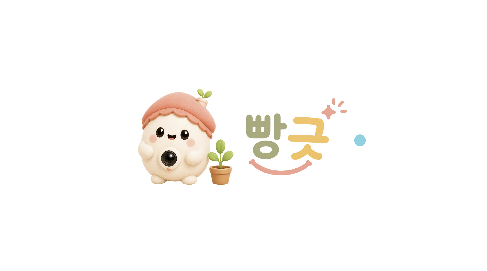

개발자
이재준입니다.
맡은 기능이 실제로 쓰이는 순간까지 책임집니다.
직접 녹음한 웃음을 홈캠이 놓쳤을 때, 그 6초를 다시 듣고 세 모델을 비교했습니다. 마지막에는 웃음과 박수가 담긴 영상을 앱에서 직접 열어 봤습니다.
빵긋의 모델 비교 기록 →
사용 기술
- 언어
- Python · Kotlin · JavaScript
빵긋의 성능 측정 프로그램을 Python으로 만들었습니다. 팅글의 Kotlin 변경은 AI와 함께 구현·검토했고, MOA의 Vue 화면에는 JavaScript를 사용했습니다.
- 웹 · 모바일
- Vue 3 · Next.js · Compose Multiplatform
상품 조회 화면, 실험 대시보드, Android 가입 흐름에 각각 사용했습니다.
- 서버 · API
- Django REST Framework · Postman
로그인·로그아웃 API를 구현하고 상품 조회 응답을 확인했습니다.
- AI · 임베디드
- YOLO · ByteTrack · EfficientAT · TensorRT
Jetson Orin Nano에서 사람을 추적하고 웃음과 박수를 감지했습니다.
- 설계 · 협업
- Figma · Unity · GitLab
게임 시안과 실행 화면을 대조하고, 팀의 변경 사항을 리뷰했습니다.
프로젝트

빵긋
가족의 웃음과 박수를 기록하는 홈캠
홈캠이 사람을 따라가며 웃음이나 박수가 들린 순간을 영상으로 저장합니다. 가족은 앱에서 그 장면을 다시 볼 수 있습니다.
담당 AI 모델 평가 · Jetson 이식 · 홈캠 제작
사용 언어 Python
Python
GetOut!
집주인과 도둑이 대결하는 1대4 PC 게임
집주인 한 명은 함정을 설치해 금고를 지키고, 도둑 네 명은 저택에 침입해 금고를 노립니다.
담당 게임 기획 · 로비와 HUD 설계 · 조작 검증
작업 도구 Figma
Figma
MOA
저축 계획에 맞는 예·적금 추천 서비스
현재 자산과 월 저축 가능액을 입력하면 조건에 맞는 상품 세 개를 비교하고, 선택한 상품의 금리로 목표 금액까지 걸리는 기간을 확인할 수 있습니다.
담당 Vue 상품 조회·입력 화면 · Django 인증 API
사용 언어Python JavaScript
JavaScript
커리어
2026.01 — 현재 · 교육
삼성 청년 AI 소프트웨어 아카데미
(SSAFY) 15기
회계학을 전공하고 빅데이터 분석을 부전공한 뒤 SSAFY에 입과했습니다. 첫 팀 프로젝트에서는 금융 웹 서비스의 상품 조회와 인증을 구현했고, 이후 AI 홈캠 제작과 게임 UX 설계를 거쳐 6인 팀 팅글의 서비스 기획과 Android 검증을 맡았습니다.